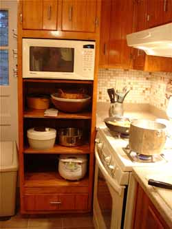
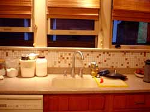
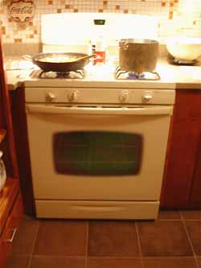
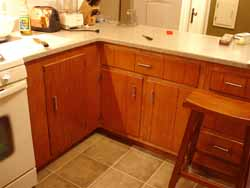

Mom likes her new kitchen

As promised, I am providing some photos of my new kitchen. I have now been cooking in it for about a week, although there are still a couple of details to iron out, like a missing shelf or two in some cabinets, a drawer that won’t open, and an in-drawer spice rack yet to be built. I also want them to reverse the opening of the refrigerator door – did you folks know refrigerators were built so that’s possible? I sort of knew that somewhere buried deep in the reptile portion of my brain, and after several days of cooking dredged up the primal memory because the new position of the fridge makes opening it on the left tremendously awkward. I sort of almost have to leave the kitchen, more or less walk around the refrigerator, open it and then have nowhere to put anything I take out of it since the kitchen is way over to my right behind the new ell.

Oh, and I got a new flat-screen TV, with a DVD player, that will be hung on the wall – me, the TV-hater, will now have by far the nicest TV in the house, in fact the nicest TV we’ve ever owned, in the kitchen. It should be comical to watch me try to turn it on and, more importantly, off. As it is, if our teenage son leaves the house with the TV on in the living room it stays on until he gets home because I can’t work the remote; pushing random buttons doesn’t seem to get me the result I’m looking for. But I do like to watch the news once in awhile while I’m cooking and my husband watches it early in the morning while he’s making the coffee. (Yes, I’m spoiled!)

But I’m loving the kitchen! The colors look great and the counters worked out perfectly; I went with a material similar to Corian called Hi-Macs, although I would have liked to have gotten granite or quartz the cost was just so high I couldn’t really justify it. The floor is tiled in foot-square ceramic tile that looks like slate, in variegated shades of tan and terra-cotta; you can see it in a couple of the photos. I think the cabinets came out really nice after they sanded, stained, polyurethaned them, and fitted them with new hardware. They put the same hardware on the windows and the laundry chute. With the new ell I have about twice as much counter space as I had before, so even though my kitchen is relatively small it feels so big compared to the way it was! It’s the same with the new stove; even though it’s not a professional range and is only 30 inches wide, compared to the oven I was working with, which was only about 13 inches wide inside, the new one seems huge. It’s really pretty, too, in a color they call biscuit with taupe burners. And the sink! It’s what they call “undermount”, and forms a continuous surface with the counter top; no seam or dividing ridge between the sink and the surrounding counter.

So although I had some issues with some of the contractor’s work habits, and the job might have gotten finished more quickly if I had gone with a crew from Lowe’s or Home Depot, no one else would have been willing to re-finish my existing cabinets the way I wanted to, and re-use the cabinet under the old cook-top to make the new ell, which I think was brilliant. I guess everything is a trade-off.
Comments
Mom is back! And the kitchen is beautiful! The fridge business surprised me when I learned about it, too. Uncle Teddy has very strong opinions about it, and he convinced us to switch sides when we got our new fridge (I’m surprised you didn’t learn that when you visited, since we got the fridge the same day you arrived). I don’t think it’s supposed to be too hard to make the switch. Maybe Jonny will do it.
I can’t believe that that kitchen has an ell in it now. I can see it in the picture but it’s still hard to imagine.
Anyway, congratulations!
it looks fabulous and it sounds like it actually “works” too . . . how often does that happen? the cabinets are my favorite part. no, it’s the open shelves. no, it’s the tile. no, it’s the 3 windows over the sink (my mom has something similar and its so stunning). are these even part of the renovation?
as my grandmother says, “use it in good health”
It looks beautiful! I’m glad you’re enjoying it and that it turned out so well. It makes putting up with the time out of the kitchen a little more tolerable when you get to return to such a nice updated version.
So, when is dinner?
I don’t remember any refrigerator door talk when I was there, Leland; did you switch the opening around on your new one? Does it open on the right now? Did you do it yourselves? That makes sense, given that your “kitchen” is to the right of the fridge, if I’m remembering it correctly. BTW, did you see on the WF ice cream post what I heard from them about the ice cream?
zp, I think you like old things! If by tile you mean the backsplash on the walls, that’s the original tile that dates back probably to about the 1940s. I liked it, too, and tried to match all the other colors around it. The windows were already there, obviously, but I just had them put those blinds up. Hopefully that will help with the sun that pours in right around when I start to cook dinner.
Katherine, stop by any night around 6:00; I always cook enough for at least one extra person. You, too, zp. :)
Your new kitchen looks great. I love the way you kept the great original elements like the tiled backsplash and the windows over the sink and designed around them. And I’ll bet you’re really enjoying having more counter space.
Our old refrigerator used to open so that you would have to walk to the far side of the refrigerator to open it. It was a pain. Our refrigerator was ancient and I believe that it dated from a time before they could be easily re-hinged. At least I hope so. I’d feel pretty stupid if we lived with something for three + years that could have been easily remedied.
It’s gorgeous! Enjoy it!
If I didn’t like old things, would I be living in Pittsburgh and reading The New Yorker? I think not.
Just got back from a very brief trip to DC . . . while I had a lovely, carefully prepared brunch there the likes of which I have not yet found here, I have to say, the look and feel of DC’s ritzy neighborhoods is so cool and souless compared to the rough around the edges gorgeous textures of Pittsburgh, PA . . .
There used to be some great funky old neighborhoods in DC, zp, and I used to live in one, the Adams-Morgan area, when I was working at the Watergate, in a great big old group house, in fact that’s how I met Jon and Leland’s father, when he and his roommate advertised for 2 more people to move into the place. I imagine it’s all gentrified now, but back in the late 70’s it was racially mixed and affordable for young people with minimum wage jobs.
Add a comment